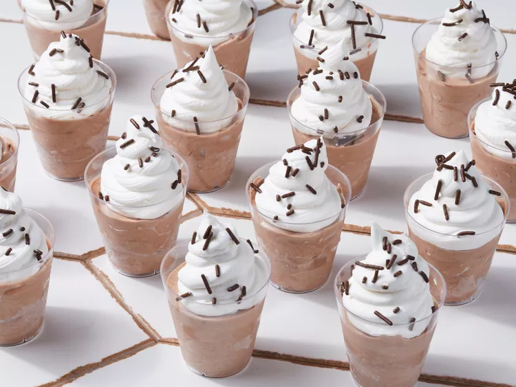

Rumchata Pudding Shots

Description
These RumChata pudding shots are even better than Jell-O shots. You could also serve these after dinner in place of
dessert.
Ingredients
- 1 cup milk
- 1 cup RumChata
- 1 (4 oz.) package instant choclate pudding mix
- 1 (8 oz.) frozen whipped cream topping
Steps
- Mix milk, rum cream liqueur, and pudding mix together in a bowl until thickened.
- Gently stir whipped topping into the pudding mixture.
- Spoon into disposable shot cups and place on a plate.
- Freeze until chilled and set, at least 3 hours.
Home Page